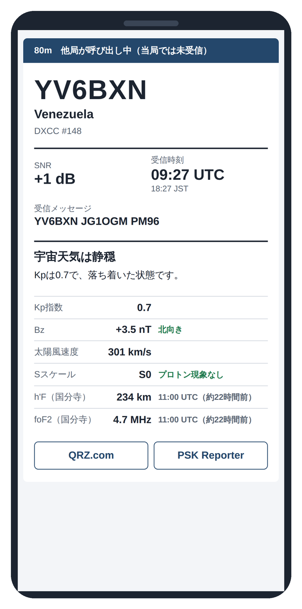
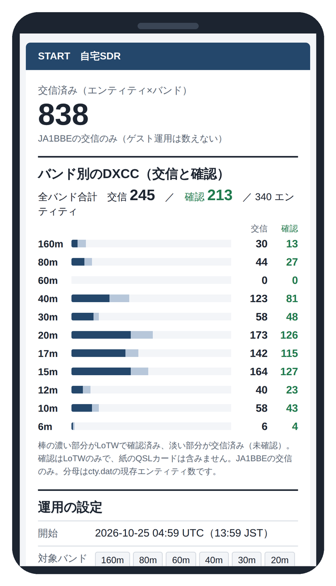
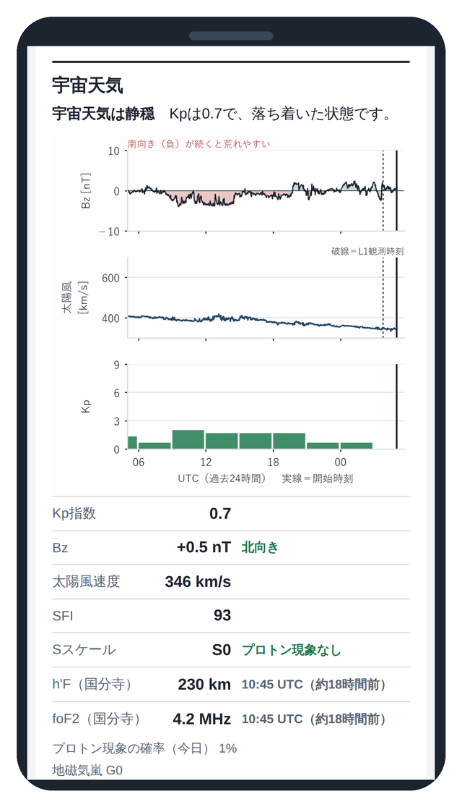
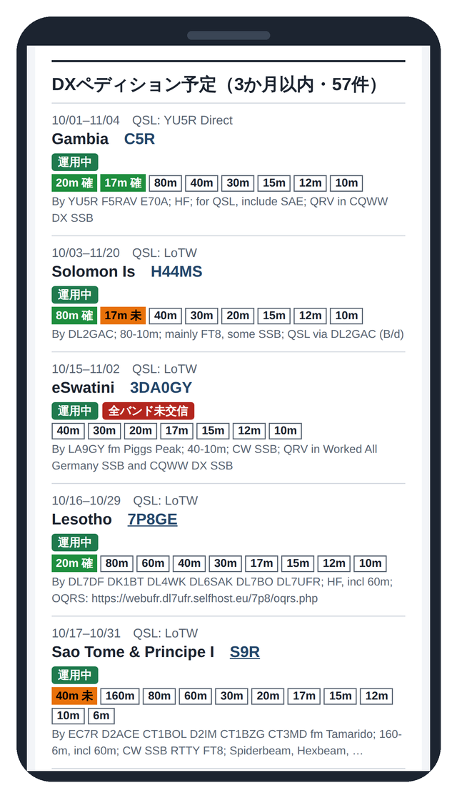
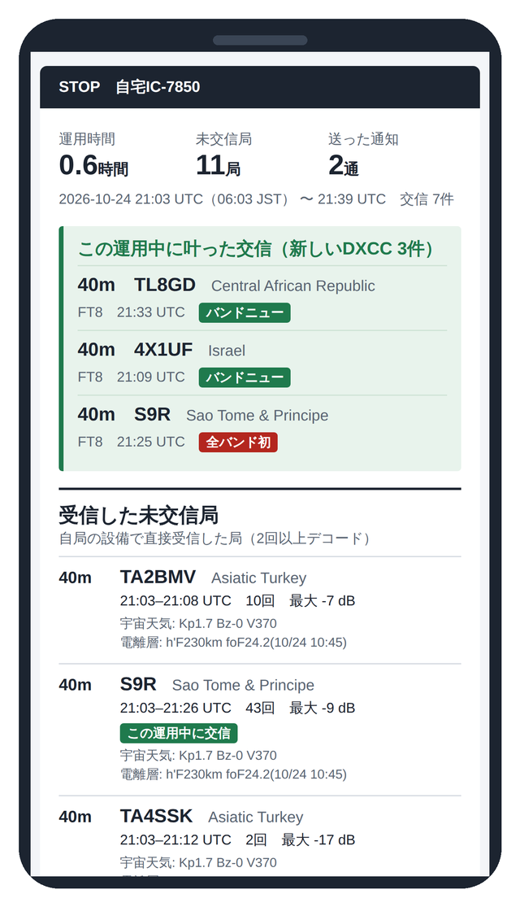
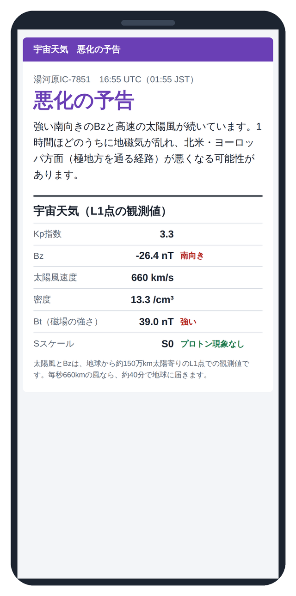

6／6
通知の見方とよくある質問
届いた通知の読み方と、使い方に合わせた調整、よくある質問をまとめました。
件名の印
通知メールの件名には、次の印が付きます。スマートフォンの通知を見ただけで、急ぐべきかどうかがわかります。
| 件名の印 | 意味 |
|---|---|
| 🔴 全バンド初 | どのバンドでもまだ交信していないエンティティ。最初の1回のデコードで知らせます。 |
| 🟢 バンドニュー | ほかのバンドでは交信済みで、このバンドでは未交信のエンティティ。 |
| 🔴🟡 全バンド初・ペディション | 全バンド初で、しかも今運用中のDXペディション。 |
| 🟡🟢 バンドニュー・ペディション | バンドニューで、今運用中のDXペディション。 |
| 🟡 ペディション | このバンドでは交信済みのDXペディション。本文に、まだ交信していないバンドを示します。 |
| 他局が呼び出し中 | 自局では受信できていないが、日本の局が呼んでいる相手が未交信のエンティティ。 |
| 要確認 | 相手のグリッドが、判定したエンティティの位置から大きく離れている。DXクラスタなどで確かめてください。 |

全バンド初以外は、偽のデコードによる誤報を防ぐため、同じ局を2回デコードしてから知らせます。同じ局・同じバンドの通知は、UTC の1日に1回までです。
開始と終了のメール
起動すると開始（START）のメールが届き、バンドごとのDXCCの交信数、現在の宇宙天気、3か月以内のDXペディション予定が載ります。止めると終了（STOP）のメールが届き、運用中に叶った交信と、受信した未交信局の一覧が載ります。
スクリプトの画面を Ctrl＋C で止めても、画面を閉じても、終了のメールを送ります。




宇宙天気の知らせ
運用中に宇宙天気が大きく変わったときも、メールで知らせます。同じ種類の知らせは、3時間に1回までです。
| 件名 | 知らせる条件 |
|---|---|
| 悪化の予告 | 太陽風の磁場（Bz）の30分平均が −10 nT より強く南向きで、しかも太陽風が 500 km/s 以上のとき。地磁気が乱れる前触れで、極域の近くを通る経路が悪くなる可能性があります。 |
| 好転 | Kp 指数が 4 以上の乱れから 2 以下に下がり、Bz が北向き、太陽風が 450 km/s 未満になったとき。 |
| プロトン現象 | 太陽放射線（Sスケール）が上がったとき。 |

スマートフォンでの受け取り方
iPhone の標準の「メール」アプリで Gmail を受け取る場合、即時の通知（プッシュ）に対応しておらず、一定の間隔でメールを取りに行くため、通知が遅れて届くことがあります。Gmail アプリは即時に通知しますが、差出人ごとに通知音を変えることはできません。
FT8 の DX は数分で聞こえなくなることもあるため、筆者は即時性を優先して Gmail アプリの通知を主に使っています。「メール」アプリで送信用アドレスを VIP に登録しておくと、遅れて鳴る音が「今のは DXCC の通知だった」という確認になります。
使い方に合わせた調整
start_dxcc.bat の python dxcc_notify.py の行に、次のような指定を書き足すと動きを変えられます。
| 指定 | 内容 |
|---|---|
--bands 160m,80m,40m | 通知するバンドを絞る（指定しなければ 160m〜6m のすべて） |
--cq-only | CQ を出している局だけを知らせる |
--min-snr -20 | 信号の強さ（SNR）がこの値より弱い局は知らせない |
--max-per-hour 10 | 1時間あたりの通知の上限（指定しなければ 20通） |
--called off | 「他局が呼び出し中」の通知をしない |
LoTW の確認状況を表示する（使う方のみ）
LoTW のアカウントがある方は、確認済み（QSL）を1日1回取得し、開始のメールで交信数と確認数を分けて表示できます。settings.ini の lotw_user に LoTW の Web サイトのユーザー名を書き、パスワードを環境変数に登録します。
setx LOTW_PASS "LoTWのWebサイトのパスワード"
注意点と限界
- エンティティの判定はプレフィックスによります。特殊なコールサインや、Big CTY にまだ反映されていないDXペディションのコールでは、誤判定があり得ます。重要な局は、DXクラスタなどで確かめてください。
- 「交信済み」の判定は、DXCC の実績管理そのものではありません。Honor Roll にはコンファームが必要です。LoTW や Club Log での確認と併用してください。
- Gmail の仕様が変わる可能性があります。アプリパスワードでの送信が、将来使えなくなることがあります。
- 遠隔で操作する場合は、電波法令と免許状の条件に従ってください。
よくある質問
デコードは表示されるのに、通知が来ません
聞こえている局が、すべて交信済みのエンティティなら、通知は来ません。正常に動いている状態です。開始のメールのバンドごとの交信数が、ご自分の実績と合っているかを確かめてください。
電離層の値に「約○時間前の値」と書かれています
電離層の観測値（国分寺）は、NICT の公開に合わせて更新されるため、数時間前の値になることがあります。いつの値かを必ず書き添えるようにしています。
Big CTY はどのくらいの頻度で入れ替えればよいですか
新しいDXペディションのコールが反映されるので、数か月に1回、画面2の手順で入れ替えることをおすすめします。
ほかのご質問は、いただいたものから順にここに加えていきます。
お問い合わせ
CQ ham radio 2027年1月号の記事と、このシステムについてのご質問は、ja1bbe@jarl.com までお寄せください。起動したときに表示される版（例：dxcc-pilot 版 1.0.0）を添えていただけると助かります。
スクリプトの一覧と利用条件は、GitHub のリポジトリにあります。